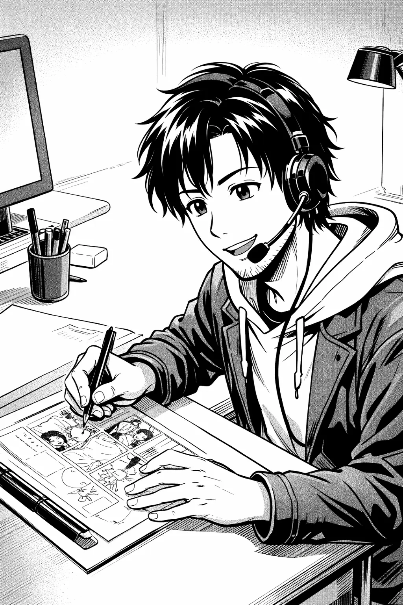

別の AIさんなので色々ちがうね。


つぎのようなすじの4コマ漫画を描いてください. 1 小さい頃にあるドラマを見ていた。 2.そこでは食べ物を扱う商売をしていたが、 慣れない人が売る順番をまちがえて 新しいものから売ってしまった。 3.古いものが残り、店の人は困った。 4.それから私は古いものから食べるクセがついた

4コママンが描いてもらってみた
でもちょっとセリフが文字化けしてるよ...